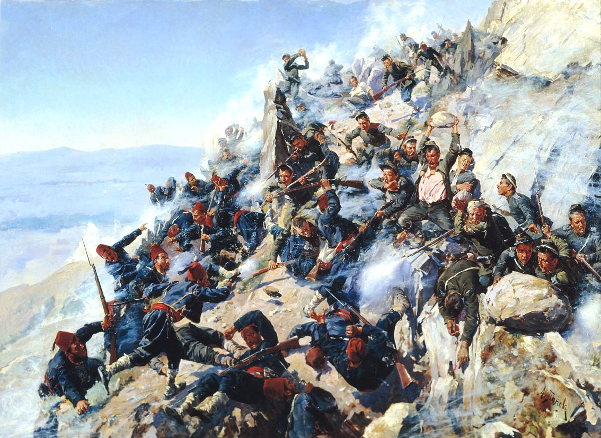
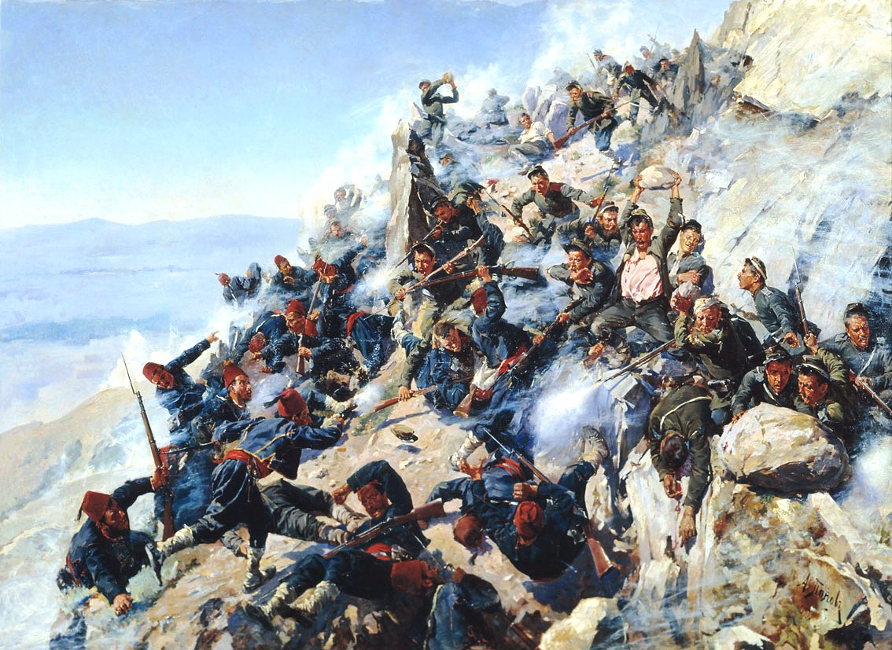

Връх "Шипка"
Опознай родината, за да я обикнеш!
Алеко Константинов
Национален парк-музей Шипка - Бузлуджа е музей на открито, разположен на самия театър на военните действия. Той обхваща района на историческите места, където са се разигравали едни от най-епичните моменти в българската история свързани с отбраната на Шипченския проход по време на Руско-турската война от 1877/78 г.
На 21 август 1877 г. пред ген. Николай Георгиевич Столетов и неговата армия стои голямото предизвикателство да удържат турските набези. Тогава българо-руската армия наброява около 7500 души. Това е няколко пъти по-малко от силите, с които разполага врага. Войската на Сюлейман паша е от 27 000 души и резерв от още 10 000. Нейната цел е достигане до Северна България, където да се присъедини към турците от Североизточните части, които трябва да предоставят помощ на обсадения в Плевен Осман Паша. Настъплението на турците започва и малко по малко обръчът около Шипка се стяга. На третия ден от боевете нещата за окупаторите не изглеждат никак добре. Боеприпасите са на привършване и моралът на воюващите постепенно пада от неблагоприятното развитие на нещата. Следобед Сюлейман паша хвърля всичките си сили в опит окончателно да завземе прохода. В този критичен момент изглежда, че отбраната ще падне, но точно навреме пристига първото подкрепление, изпратено от ген. Радецки от Габрово. То отново възвръща изгубените сили на защитниците и устремът на турците е забавен. Развоят на битката се обръща, когато привечер пристига и останалата част от батальона и с нейна помощ неприятелят е отблъснат. Набезите на Сюлеймановите войски продължава и през следващите три дни, но напразно. Проходът е под контрола на руската армия и пред нападателите не остава нищо, освен да отстъпят.
Музеят на върха на Шипка е създаден през 1956 г. и представлява комплекс от паметници, възстановки на позиции, батареи и землянки. На връх Шипка се издига Паметникът на свободата. По седемте етажа на Паметника е подредена музейна експозиция, включваща богата колекция от ордени и медали, снимков и документален материал, лични вещи на участници в боевете, оръжие. Посетителите могат да се изкачат до откритата площадка на самия покрив на Паметника, откъдето се разкрива панорамна гледка към Розовата долина, съседните върхове и Предбалкана.
Преди няколко дни България чества 143 години от Освобождението си. На празничния 3 март стотици сънародници се преклониха пред паметта на загиналите в борбата за свобода. Освобождението беше отбелязано с редица прояви в цялата страна. Кулминацията беше тържествената заря-проведена на площад "Народно събрание" в София.
“Магично място осеяно с история!” – споделят хора посетили забележителността
 
